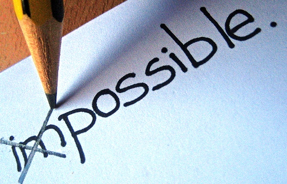

My Mother's Issue with my Career Choice
Still ongoing? . . . yes
Being Vietnamese, there was an immense of expectation on their son to be a doctor. I was in medical school for 2 years and discovered a love for business and technology. I left medical school to join Dev Bootcamp to be a software engineer. Now before I left medical school, there is something you guys must know. The medical school was in China. My mom has warned me that the school system there sucks. I made it to USA med schools, but chose to go to China to learn life lessons and experience an entirely new culture. This has led to disproval from the get-go.
Upon returning to America, my mom and I had conflicts in small decision choices. After a dinner at Medieval Times, there was a huge line of car waiting to exit out. Instead of going that path, I chose to take the back-side path, which no one is taking to exit out of the dining place. Both of us do not know for sure if there is an exit, but I wanted to try since the line to exit would take us a good 15 minutes of waiting. My mom scolded at me, "Son, listen to me for once and take this path." I told my mom, "Trust me, I believe that there is a secret exit at the back which will save us time." My mom responded, "You will be wrong like always and waste more time, just like you just wasted your 2 years." I was struck because all my life, my mom has steered me her way. For once, I began to have my own thinking and my own decisions. I know I have made a mistake in my choice and wasted time before, but it doesn't mean I would always make a mistake for the rest of my life. I chose to believe in myself and took the road less travelled, literally. Low and behold, there was a secret passage out. My mom was there in silence, and that time I knew I won. However, winning against your mom in that way doesn't mean anything less of her. I was happy that I chose to believe in myself. I was upset at that situation because my mom wanted to regain control over my life decisions.
Conflict resolution . . .
Just like evolution, it will take time. My mom still believe me going to Dev Bootcamp is still a mistake. Coding doesn't fit my personality. Coding doesn't save people. I responded to her that codes are what improves the quality of people's lives, intertwine with medical advancements and research/development. The only conflict resolution is the result. Once I have bring change upon this world in a positive way and achieve my dreams, I would have proved my worth to her but most importantly to myself because I have given up so much for this path I have chosen. I believe it is harder than medical school. It is filled with more challenges and uncertainty, and being the adventurous type such as I, it is more innate with my personality. I can now live with a smile on my face, but a pocket full of pennies. I am okay with that ^_^ . . for the time being until Nam becomes the next Gates, Tim Berners Lee, Wozniak, Zuckerberg.
